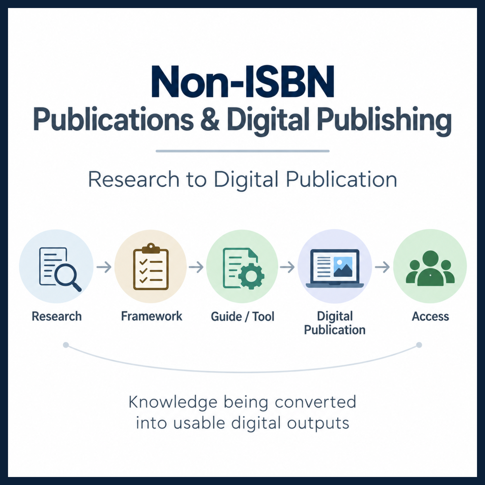

Leanpub
Digital publishing platform for structured books and professional knowledge publications.
Open Leanpub profileResearch-driven guides, frameworks, and tools converted into accessible digital publications for students and professionals making better education and career decisions.

The publishing layer connects research with structured frameworks, practical guides, tools and public digital access.
The current non-ISBN publishing system uses Leanpub, Gumroad and Selar for different forms of digital publication and access.
Digital publishing platform for structured books and professional knowledge publications.
Open Leanpub profileDigital distribution channel for research-driven guides and scholarship decision resources.
Open Gumroad profileProfile for research-driven guides, frameworks and tools supporting better education and career decisions.
Open Selar profileThree approved Leanpub publications form the book component of this non-ISBN publishing portfolio.
A Field Manual to Reduce Dependency, Increase Portability, and Build Professional Freedom.
Building an AI-Powered Research Factory for Consistent Academic Output.
Doctrine, Structures, and Reasoning Systems for Defensible Executive Judgment.
Three approved digital publications focused on scholarship research, preparation and decision support.
Continuously Updated Research and Decision Support for International Scholarship Applicants.
A Research-Based Framework for Evaluating, Prioritising and Preparing for International Scholarships.
A Decision Guide for Choosing Better-Fit International Scholarships.
The Selar profile is included as a publishing and access identity only. No Selar books or products are listed here.
Research-driven guides, frameworks, and tools that help students and professionals make better education and career decisions.
Visit Selar profileSix publications are listed on this page: three on Leanpub and three on Gumroad. Selar is represented by its profile only.
The ASA System, Research Production System™, and The Executive Decision Defense Playbook.
View Leanpub booksScholarship Intelligence Desk, The Scholarship Decision System, and Before You Apply.
View Gumroad publicationsThe Selar profile provides the platform-level identity and access point.
Open Selar profileThe digital publishing layer makes selected research-derived knowledge accessible through established publication and distribution platforms.
Publications are connected to research, frameworks, evidence and practical decision systems.
Digital publication provides direct access to structured knowledge and practical resources.
Each publication links directly to its approved publishing platform.